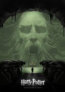
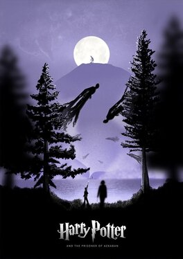
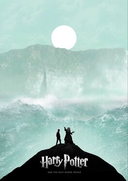
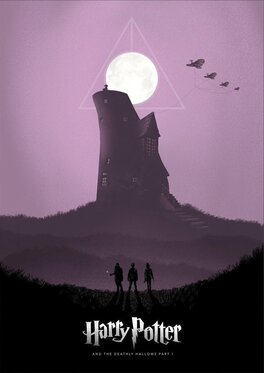
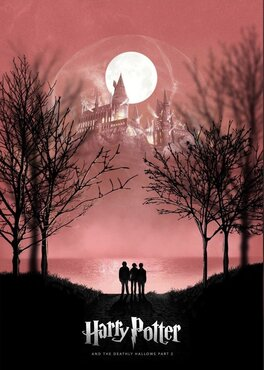

Harry Potter y la Piedra Filosofal
El día de su cumpleaños, Harry Potter descubre que es hijo de dos conocidos hechiceros, de los que ha heredado poderes mágicos. Debe asistir a una famosa escuela de magia y hechicería, donde entabla una amistad con dos jóvenes que se convertirán en sus compañeros de aventura. Durante su primer año en Hogwarts, descubre que un malévolo y poderoso mago llamado Voldemort está en busca de una piedra filosofal que alarga la vida de quien la posee.

Harry Potter y la Camara de los Secretos
Terminado el verano, Harry no ve la hora de abandonar la casa de sus odiosos tíos. Inesperadamente se presenta en su dormitorio Dobby, un elfo doméstico, que le anuncia que correrá un gran peligro si vuelve a Hogwarts.

Harry Potter y el Prisionero de Azkaban
El tercer año de estudios de Harry en Hogwarts se ve amenazado por la fuga de Sirius Black de la prisión de Azkaban. Al parecer, se trata de un peligroso mago que fue cómplice de Lord Voldemort y que intentará vengarse de Harry Potter.
Harry Potter y el Caliz de Fuego
Hogwarts se prepara para el Torneo de los Tres Magos, en el que competirán tres escuelas de hechicería. Para sorpresa de todos, Harry Potter es elegido para participar en la competencia, en la que deberá luchar contra dragones, internarse en el agua y enfrentarse a sus mayores miedos.
Harry Potter y la Orden del Fenix
En su quinto año en Hogwarts, Harry descubre que muchos integrantes de la comunidad de magos no conocen la verdad acerca de su encuentro con Lord Voldemort. Cornelius Fudge, ministro de magia, designa a Dolores Umbridge como maestra de defensa contra de las artes oscuras porque cree que el profesor Dumbledore planea apoderarse de su trabajo. Pero sus enseñanzas son inadecuadas, por lo que Harry prepara a los estudiantes para defender la escuela en contra del mal.

Harry Potter y el Misterio del Principe
Harry descubre un poderoso libro y, mientras trata de descubrir sus orígenes, colabora con Dumbledore en la búsqueda de una serie de objetos mágicos que ayudarán en la destrucción de Lord Voldemort.

Harry Potter y las Reliquias de la Muerte, Parte 1
Harry, Ron y Hermione se marchan de Hogwarts para iniciar su misión más importante: tienen que destruir los horrocruxes, el secreto del poder y la inmortalidad de Voldemort, en los que el temido mago oscuro guarda los fragmentos de su alma.

Harry Potter y las Reliquias de la Muerte, Parte 2
Un enfrentamiento entre el bien y el mal espera cuando el joven Harry, Ron y Hermione se preparan para una última batalla en contra de Lord Voldemort. Harry se ha convertido en un joven fuerte que tiene la misión de librar al mundo del mal.